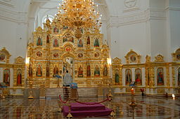
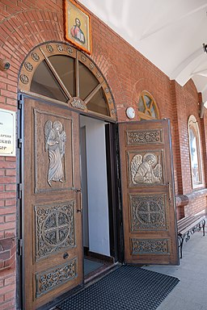
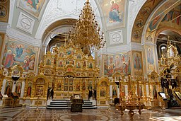
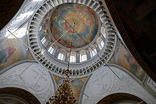

Михайловский собор — кафедральный собор Ижевской епархии Русской православной церкви, расположенный в Ижевске. Находится на одной из самых высоких точек города, на Красной (Михайловской) площади. Наивысшая точка собора находится на высоте 67 м.
Настоятель — правящий (епархиальный) архиерей Ижевской епархии. По состоянию на 2021 год это Викторин (Костенков), митрополит Ижевский и Удмуртский. Заместитель настоятеля — протоиерей Роман Воскресенских.
Храм стоит на месте существовавшего с 1765 года заводского кладбища, где находилась Троицкая часовня, приписанная к первому Ижевскому храму пророка Илии. В 1784 году часовня была перестроена в храм — в честь Святой Троицы; храм был разрушен пожаром в 1810 году.
В 1855 году на месте прежней Троицкой церкви выстроена в византийском стиле большая каменная часовня 30-метровой высоты — в честь Архангела Михаила. В 1876 году началась кампания по сбору средств на строительство на месте Михайловской часовни нового храма. В 1893 рабочие Ижевского завода приняли решение перечислять на строительство храма 1 % от зарплаты. Проектирование было поручено вятскому архитектору Ивану Чарушину, который выполнил проект за 3 года и 5850 рублей. Строительный комитет в 1896 году принял решение о том, что новый сбор не должен быть больше Александро-Невского собора. В 1897 году состоялась торжественная закладка собора на Нагорной площади, основное строительство здания было завершено к 1907 году, главный престол был освящён 4 ноября того же года во имя Святого Архистратига Михаила.
Из-за революционных событий дальнейшее благоустройство храма было приостановлено. 4 ноября 1915 состоялось торжественное освящение главного престола храма как бесприходной церкви Ижевского завода, приписанной к Александро-Невскому собору. Самостоятельный приход был открыт в 1917 году. Храм имел 3 престола: главный — во имя Архистратига Михаила, южный — в честь Николая Чудотворца и северный — в честь мученицы Александры.
| Интерьеры | |||
|  |  |  |  |